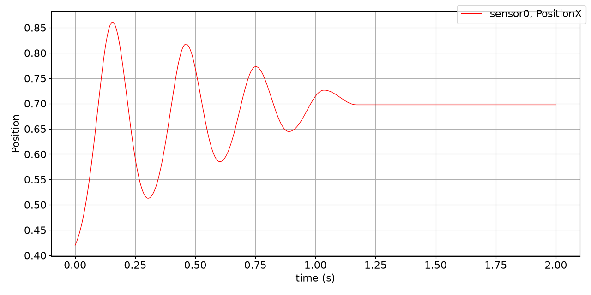

Symbolic user functions
Notebook python/Notebooks/tutorialSymbolic.ipynb.
A nonlinear oscillator: a mass point on a Cartesian spring-damper whose force is a user function, written once in Python and turned into a symbolic user function, which runs much faster. The outputs below each cell are those of the last run.
import exudyn as exu
from exudyn.utilities import * # includes itemInterface and rigidBodyUtilities
import exudyn.graphics as graphics
SC = exu.SystemContainer()
mbs = SC.AddSystem()
esym = exu.symbolic #an abbreviation of the symbolic library; often it can be replaced by numpy
The parameters of the spring-damper system:
L = 0.5
mass = 1.6
k = 4000
omega0 = 50 # sqrt(k / mass)
dRel = 0.05
d = dRel * 2 * omega0
u0 = -0.08
v0 = 1
f = 80
The ground and the mass point with its initial conditions, the Cartesian spring-damper between them, a force on the mass point, and a sensor of its position:
objectGround = mbs.CreateGround(referencePosition=[0, 0, 0])
massPoint = mbs.CreateMassPoint(referencePosition=[L, 0, 0],
initialDisplacement=[u0, 0, 0],
initialVelocity=[v0, 0, 0],
mass=mass)
csd = mbs.CreateCartesianSpringDamper(itemNumbers=[objectGround, massPoint],
stiffness=[k, k, k],
damping=[d, 0, 0],
offset=[L, 0, 0])
load = mbs.CreateForce(itemNumber=massPoint, loadVector=[f, 0, 0])
sMass = mbs.AddSensor(SensorBody(bodyNumber=massPoint, storeInternal=True,
outputVariableType=exu.OutputVariableType.Position))
The user function of the spring-damper, with Python or symbolic expressions - esym.sign works for both:
def springForceUserFunction(mbs, t, itemNumber, u, v, k, d, offset):
return [0.5 * u[0]**2 * k[0] + esym.sign(v[0]) * 10, k[1] * u[1], k[2] * u[2]]
Up to here, this is a regular Python user function. CreateSymbolicUserFunction records it with symbolic arguments
and makes a symbolic user function, which is evaluated in C++; printing it shows the recorded expressions:
doSymbolic = True
CSDuserFunction = springForceUserFunction #used if no symbolic user function is made
if doSymbolic:
CSDuserFunction = CreateSymbolicUserFunction(mbs, springForceUserFunction, 'springForceUserFunction', csd)
print('user function:\n', CSDuserFunction)
user function:
[(((0.5 * pow(u[0], 2)) * k[0]) + (sign(v[0]) * 10)),(k[1] * u[1]),(k[2] * u[2])]
The user function goes to the object; then assemble and solve, with an explicit solver and small steps:
mbs.SetObjectParameter(csd, 'springForceUserFunction', CSDuserFunction)
mbs.Assemble()
simulationSettings = exu.SimulationSettings()
tEnd = 2
steps = 200000
simulationSettings.timeIntegration.numberOfSteps = steps
simulationSettings.timeIntegration.endTime = tEnd
simulationSettings.solution.file.write = False
simulationSettings.solution.sensors.writePeriod = 0.001
mbs.SolveDynamic(simulationSettings, solverType=exu.DynamicSolverType.ExplicitMidpoint)
n1 = mbs.GetObject(massPoint)['nodeNumber']
u = mbs.GetNodeOutput(n1, exu.OutputVariableType.Position)
print('u=', u)
u= [0.69752247 0. 0. ]
The position of the mass point over time:
mbs.PlotSensor(sMass, components=[0], closeAll=True)

